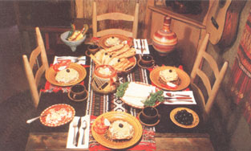
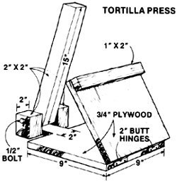
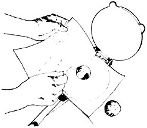
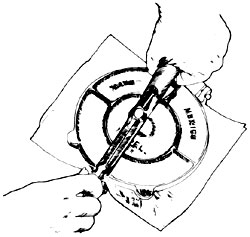
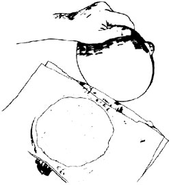
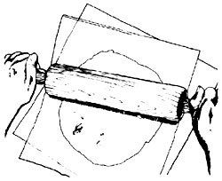
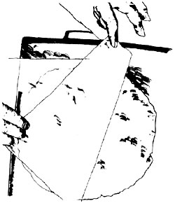
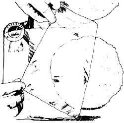
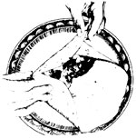
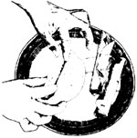

It's summer! A great time to learn about . . .
Maybe it's because I'm from southern California (which sometimes seems more Mexican than Mexico Itself). And maybe it's just because I'm onto a good thing. But, whatever the reason, I don't think anything beats the taste of genuine, homemade tortillas (tore-TEE-yahs) hot off the griddle and served with all the fixin's.
Sure, sure . . . in this age of the mass-produced this and the factory-stamped-out that, you can buy your tortillas "ready made" down at the supermarket. Or, if you happen to reside in a city that's big enough to have a "Little Mexico" section, you might even shop occasionally in a small, ethnic grocery that sells freshly mixed, moist mass (moss-ah) dough which you can bake up into tortillas yourself. And, even if you live way out in the country somewhere, there's still a chance that your local crossroads store stocks "Mass Harina" . . . which is a dried version of masa made (in this country) by the Quaker Oats Company.
But when I say that "genuine, homemade tortillas" taste best of all, that's exactly what I mean. And, at least for the purist, "homemade" really starts in only one place: out in the garden or down in the lower forty.
The important thing to remember when you set out to make tortillas "from the ground up" . . . is that you simply cannot produce any kind of masa worthy of the name from sweet corn. Sweet corn contains so much sugary starch that it just turns into a sticky goo when you try to grind it. What you want to plant is hominy corn (the seeds are readily available here In California) or, for that matter, almost any kind of field corn.
(Editor's note: Some modern varieties of hybrid field corn produce tremendous yields, but their kernels also contain a great deal of starch and very little protein. In addition, the ears shucked from such hybrids are almost impossible to dry for storage with anything less than very energy-intensive, specialized shelling and drying equipment. If you can't find hominy seed corn to plant, try "old-fashioned" dent or flint corn. After all, that's what native Americans grew in the first place . . . and that's what all Mexican cooks based their original tortilla recipes on anyway!)
Since this is an article about tortillas and not about gardening, we will now flash forward to the fall . . . when your hominy, dent, flint, or-in some cases-hybrid field corn (make sure you've planted one with a high protein and low starch content) is mature.
Leave the ears of corn on the stalk until their husks have turned tan and paper-like and the individual kernels of grain on each cob feel very hard and dry. The harder and drier, the better: The best masa is made from corn which-prior to grinding-contains no more than 15% moisture.
When your corn has cured enough to pick, harvest the ears and store them in a crib, an open upstairs room, or some other place where they'll be protected from the rain yet exposed to a free flow of air. Whatever you do, though, don't try to speed up this final drying process by "baking" the ears of corn in the sun. That will only unnecessarily cause the grain to lose nutritional value.
Within a month, more or less (depending on where you live), of the time you shuck and store your corn, the individual kernels on each cob should be dry enough (bone dry!) to shell and make into hominy.
Hominy is nothing but kernels of corn that have had their hulls and germ removed. This can be done by boiling the grains in either [1] limewater or [2] lye water. I prefer to use the first solution because [a] it's quicker, [b] powdered lime can be obtained from most hardware stores, and [c] the limewater method, traditionally, has been used the most in Mexico.
CAUTION: Although countless generations of unschooled peasants have routinely and safely made their own hominy with both limewater and lye solutions, we "civilized" folks sometimes foolishly forget that either lye or lime can be caustic enough to dissolve an aluminum pan. Use either solution only in a glass, stainless steel, or unchipped enamelware container. And keep whichever mixture you use out of the reach of children and away from your skin.
To turn two quarts of corn into hominy using the limewater method, start by dissolving four heaping tablespoons of powdered lime in four quarts of water. Then cook and stir the kernels of grain in the solution over a low heat until their hulls begin to loosen (a few will float to the top). At that point, remove the container of corn and limewater from the stove.
CAUTION: When using either lye or lime to make hominy, it's very important that you allow your caustic solution to cool completely at this stage of the game before you begin to handle the corn you're processing. The steam from both lye and lime can "burn" you just as severely as the liquid or solid form of either substance.
After the pan has cooled, carefully pour off the lime solution and fill the container with fresh water. Then drain and rinse the corn several more times until the rinse water is clear and free from all traces of lime. During this part of the process, you can work the mixture with your fingers to remove stubborn hulls and the kernels' dark germs.
If you decide to use lye for your hominy making, you'll find the process very similar . . . but a bit more time-consuming. For two quarts of corn, begin by adding two ounces of lye (available from any grocery store and most hardwares) to eight quarts of water. Then add the corn to the solution and bring it to a gentle boil. Cook until the hulls loosen, and allow the mixture to cool.
When the container of corn and lye has stopped steaming, slowly drain off the liquid (taking care not to splash any of the fluid on you). Then refill the pan with fresh water and drain four or five times the same as called for in the limewater method above. Only, when working with lye, you must also boil the corn for five minutes after adding each fresh change of water (that's why it takes longer to make hominy with lye than with lime). Continue this cycle until the kernels are soft, then drain them one last time. You now have the nixtamal from which masa is made.
And if all this sounds like too much work, beware! I've tried skipping the whole process and just making my tortillas from canned hominy. The results looked like tortillas all right . . . but had a canned taste that-in my estimation, at least-would scare anyone away from real Mexican food!
If you lived in Mexico, you'd now grind your freshly made hominy on a slanted stone called a metate (may-TAW-tay) with the help of a stone rolling pin known as a mano (MAW-no). I doubt that you have those traditional implements lying around the house, but it really doesn't matter. You can achieve the same result by running the drained hominy several times through the fine blade of a food grinder. (That's a food grinder, and not a grain mill . . . not, that is, if you want to keep the mill in working order.) The resulting masa should be just moist enough to hold together well-something like pie dough-and if it isn't, you can add small amounts of water until it is.
If you're like me, you won't be able to resist at least one attempt at making your tortillas the way that Mexican señoras do. After all, it looks so easy: They gather up a ball of dough about the size of an apricot and pat it back and forth between their hands-flatter and flatter-until . . . Presto! A perfect tortilla!
At least that's the way it works for them. But not for this kid. My approach always turns out more like "pat, pat, plop" . . . and the "plop" is another of many sticky mistakes on the kitchen floor.
But there's more than one way to skin a cat or mash a tortilla. There are, for instance, those handy little devices known as rolling pins. And there are also very worthwhile cast-iron machines called tortilla presses. The latter are built to withstand extremely heavy usage and, if you can't scare one up locally, you can order it by mail for $4.95 (plus shipping and California residents be sure to add 6% sales tax) from La Mexicana, 401 11th Ave., Dale, Calif. 93215.
And if you really want to feel self-sufficient, you can even whip up your own tortilla press out of wood as we did. So far our do-it-yourself press has worked like a charm, and the accompanying drawing will show you how we accomplished this amazing feat of workshop dexterity.
Two cups of your fresh masa will make about a dozen six-inch tortillas. Or, if you're going the Masa Harina route, you can start with two cups of the prepared and dried flour mixed together with one and a third cups of water and rolled into one large ball. Either way, the big lump of masa dough is then divided into 12 small lumps . . . each about the size of a large apricot.
If you have no tortilla press, place one of the small balls of dough on a slightly dampened cloth and pat it lightly. Then spread another damp cloth over the lump and-working from the center outward-roll the dough into a flat cake, one-sixteenth of an inch thick and six or more inches across.
The idea, then, is to gently roll back the top cloth and deftly trim the flattened tortilla into a perfect circle. For me, however, that always turns out to be easier said than done. But what the heck! Long experience has shown that square or lopsided tortillas taste just as good as round ones anyway. Trim yours the best you can, keep each one intact as you replace both layers of cloth with wax paper, and then set the rolled-out cakes aside for cooking.
This whole process, as might be expected, is a lot easier and faster when you have some kind of tortilla press: Just sandwich a glob of dough in the center of the machine between two sheets of wax paper . . . and bear down. Voila (or whatever its Mexican equivalent might be) . . . a perfect tortilla every time!
Up until now, of course, we've been talking about tortillas made from nothing but ground-up hominy (corn). You should know, however, that you can also make the flattened cakes from wheat flour. Combine one teaspoon of salt with two cups of flour and work in a quarter cup of lard with a pastry blender until all the particles of shortening are chopped quite fine. Then gradually stir in one-half cup of lukewarm water, roll the dough into a ball, and refrigerate (which will make it easier to work with later) overnight.
Allow the dough to return to room temperature the next day and then divide it into 10 balls. Flatten the blobs into tortillas the same way you would flatten the cakes if they were made of corn.
Corn or wheat, the actual cooking of a tortilla is the same: Carefully peel the wax paper from one side of the cake, invert it onto a medium-hot (380°F), ungreased griddle, remove the other sheet of paper, and turn and cook the tortilla until it becomes dry and speckled.
These thin, chewy pancakes taste their scrumptious best when eaten hot off the griddle. They also keep remarkably well when securely wrapped and then refrigerated or frozen.
No real Mexican meal, or comida (coeMEE-dah), would be complete without frijoles refritos (free-HOLE-ase ray-FREEtose), or refried beans. They're the perfect complement to tortillas . . . they're the main ingredient for a number of very popular Mexican dishes . . . and they're delicious all by themselves.
I've tried several kinds of bean-spink, pinto, kidney-in my frijoles refritos recipe and, although they're all good, I always come back to the pink ones. They just seem sweeter somehow, and they're my favorite.
Simmer one-half pound of the dry beans until they're almost tender, add one cup of finely chopped onion, simmer for another five minutes, and then remove the pan from the stove. Drain off any excess water and mash the beans. Then return the pan to a low heat, stir in at least one-third of a cup of bacon drippings (I add as much as the beans will absorb but not enough to build up a layer of oil on their surface), and flavor the dish to taste with grated cheese. Store any leftovers in the refrigerator and then either heat them in a pan or fry them in a little oil for another meal.
A word about pig fat: As far as I'm concerned, it's the bacon grease and that grease alone which gives frijoles their distinctive flavor and it would be a crime to use any other shortening in this recipe. But that's a matter of personal taste and you may well prefer some other kind of lard. No matter what you use, though (and, again, I'm holding out for bacon grease), the important thing is not to skimp on this flavoring!
Frijoles refritos, as their name implies, can be reheated or refried a number of times . . . if you have any left over!
More hectic days here in the Campbell household end with a dinner of tacos (TAHkose) than with any other food. Taco "shells" are really just folded-over corn tortillas fried in about one-half inch of oil on a medium-high burner (instead of cooked on a griddle) so that they come out more like giant corn chips instead of chewy pancakes.
Ease each tortilla into the oil and, as it starts sizzling, fold the circle of rolled-out or pressed dough in half with tongs to turn it into sort of a U-shaped shell. Then fry the shell and turn it until it's crisp but still slightly flexible. This usually takes about one minute and it's important that you not overcook your taco shells (otherwise they'll break when you pry them apart to stuff them).
Karen Valentine, I hear, eats greasy tacos with milk . . but I happen to prefer mine drained, thank you. Suit yourself. And suit yourself when you fill the fried shells. We like ours stuffed with crumbled, fried hamburger that has been moistened with frijoles refritos. The meat is then topped with shredded lettuce, grated cheese, chopped tomatoes and onions, black olives, avocados, slices of hard-boiled eggs, diced celery, mushrooms . . . you name it. The more variety we have, the better.
And don't limit yourself to just hamburger, eitherl Almost any kind of shredded meat or poultry goes well in a taco . . . especially when seasoned with a teaspoon or so of a spicy, homemade salsa, or sauce.
I make our salsa by peeling and cutting up several ripe tomatoes. I then add about one-half cup of chopped onion, several diced green chilies (go easy on these peppers if you're not used to "hot" sauce), a crushed clove of garlic, a pinch of salt, and a dash of ordinary ground pepper.
The chilies for the above recipe, of course; must be peeled before they're diced. Place them under your oven's broiler (not more than three inches from the element) and toast and turn them until the chilies are brown and blistered. Then remove, cool, peel, and add them to your salsa.
Tostodas (tose-TAH-dahs) are very similar to tacos in that they are fried corn tortillas served with meat, frijoles refritos, shredded lettuce, grated cheese, etc. The tostadas, however, are fried flat-instead of folded-and are used as edible plates, instead of shells.
I like my tostadas to crunch, so I fry each one until it begins to turn brown. The gigantic, flat corn chips are then coated with a thin layer of frijoles refritos and topped with all the good things that we sometimes stuff into tacos.
Unlike crisp tacos and tostadas (which are made from corn), burritos (boor-RHEEtose) are soft tortillas made of wheat flour and then wrapped around a meat and/or bean filling.
Since wheat tortillas destined to become burritos should be somewhat larger than normal, you'll probably want to roll them out with a rolling pin instead of trying to flatten them in either a store-bought or homemade press. Otherwise the basic preparation is exactly the same as for the wheat tortilla recipe given earlier in this article. You can, in short, make a large batch ahead and store them in your refrigerator or freezer.
When I'm ready to turn some of my griddle-cooked and stored, oversized wheat tortillas into burritos, I usually wrap them in foil and warm them for a few minutes in the oven. Then, when the tortillas are heated through, I place a dollop of hamburger and frijoles refritos in each one's center. A sprinkling of finely chopped onion, grated cheese, and salsa is then added and the burritos are rolled into a sort of sandwich and eaten. Make sure you fold up about two inches along the sides, so the filling won't fall out!
If you like cheese, you'll love quesadillas (kay-sah-DEE-yahs). These delicious snacks or side dishes are also made with wheat flour tortillas . . . only this time the "pancakes" are folded in half around a thick slice of either cheddar or jack cheese.
I usually grate my cheese so it'll melt more quickly, pin the tortilla shut around it with several toothpicks, and then fry each quesadilla in one-half inch of hot butter, oil, or lard. Turn and fry each of these delights until the cheese inside has melted and the shell is a crisp, golden brown. Yummy!
Flautas (FLOU-tahs) are sort of a cross between tacos and burritos and, as you've probably guessed, make a terrific snack. Warm some corn tortillas that have been prepared ahead on a medium-hot, ungreased griddle and-when they're soft and pliable-spread several spoonfuls of hamburger /frijoles refritos filling down their middles and slightly off-center.
The flautas are then rolled into tubes and secured with toothpicks stuck straight through each roll (the corn tortillas used in flautas are much more prone to tear than the flour tortillas called for in the quesadilla recipe, so pin your flautas very carefully). Fry the filled tubes until they're crisp (like tacos), drain, and eat with your fingers (how else?).
These are only a few of the delicious dishes you can make based on the versatile tortilla and frijoles refritos. Experiment! The more you play with tortillas-either corn or wheat-and refried beans, the more you'll love them. Adios, amigo . . . and good eating!
|
 |
 |
 |
|
 |
 |
 |
|
 |
 |
|
|
|
 |
|
|
 |
|
|